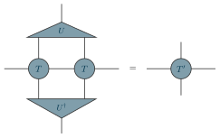

Examples / 24
A HOTRG step

One step of the higher-order tensor renormalisation group, along one direction.
Two tensors T of a two-dimensional network are contracted side by side, and the two indices that point up – and the two that point down – are fused into one by an isometry U from a higher-order SVD of the pair, truncated to the bond dimension kept. U-dagger closes the other side. What is left has one index in each direction again: the coarse-grained tensor T', one site of a lattice half as long in this direction. The next step does the other direction.
The picture
Point at a line to see what it draws, or at the picture to see which line drew it.
\begin{tikzpicture} \tnstack{H}{2}{top, mid, bot} \tnlayer{H}{top}{iso/$U$/2} \tnlayer{H}{mid}{2*coef/$T$} \tnlayer{H}{bot}{isodown/$U^{\dagger}$/2} \tnconnect[apart={top, bot}]{H} \tnopen{up}{H-top-1} \tnopen{down}{H-bot-1} \tnopen{left}{H-mid-1} \tnopen{right}{H-mid-2} \tneq \tnstack{K}{1}{top, mid, bot} \tnlayer{K}{mid}{coef/$T'$} \tnopen{up}{K-mid-1} \tnopen{down}{K-mid-1} \tnopen{left}{K-mid-1} \tnopen{right}{K-mid-1}\end{tikzpicture}
The whole file
\documentclass[border=4pt]{standalone}\usepackage{amsmath,amssymb}\usepackage{tikz-tensors}\input{notation}\begin{document}\begin{tikzpicture} \tnstack{H}{2}{top, mid, bot} \tnlayer{H}{top}{iso/$U$/2} \tnlayer{H}{mid}{2*coef/$T$} \tnlayer{H}{bot}{isodown/$U^{\dagger}$/2} \tnconnect[apart={top, bot}]{H} \tnopen{up}{H-top-1} \tnopen{down}{H-bot-1} \tnopen{left}{H-mid-1} \tnopen{right}{H-mid-2} \tneq \tnstack{K}{1}{top, mid, bot} \tnlayer{K}{mid}{coef/$T'$} \tnopen{up}{K-mid-1} \tnopen{down}{K-mid-1} \tnopen{left}{K-mid-1} \tnopen{right}{K-mid-1}\end{tikzpicture}\end{document}